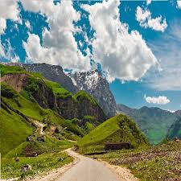
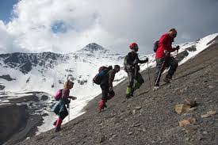
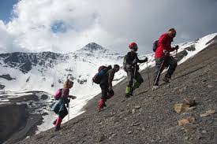
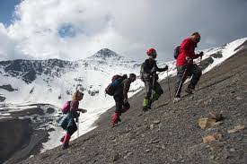
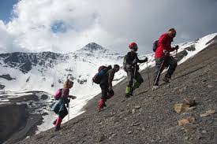

Галерея Шахдага

 



Шахдаг — одна из самых известных гор Азербайджана, расположенная в регионе Гусар. Она привлекает туристов своими впечатляющими альпийскими пейзажами, разнообразными маршрутами и уникальной природой. Высота горы достигает более 4200 метров, а климат и рельеф создают разнообразные условия для пешего туризма и хайкинга.
Гора известна своими живописными долинами, густыми лесами и кристально чистыми горными реками. Маршруты варьируются от лёгких прогулок до сложных восхождений, подходящих для опытных туристов и любителей приключений.
Маршрут 1: Лёгкая прогулка к лесным озёрам. Идеально для новичков и семей.
Маршрут 2: Средний маршрут через долины и хребты с панорамными видами на Кавказ.
Маршрут 3: Сложный альпийский маршрут на вершину для опытных туристов.
Чтобы поход на Шахдаг был безопасным и комфортным, обратите внимание на следующие рекомендации:
Для дополнительной информации: info@easytravel.com